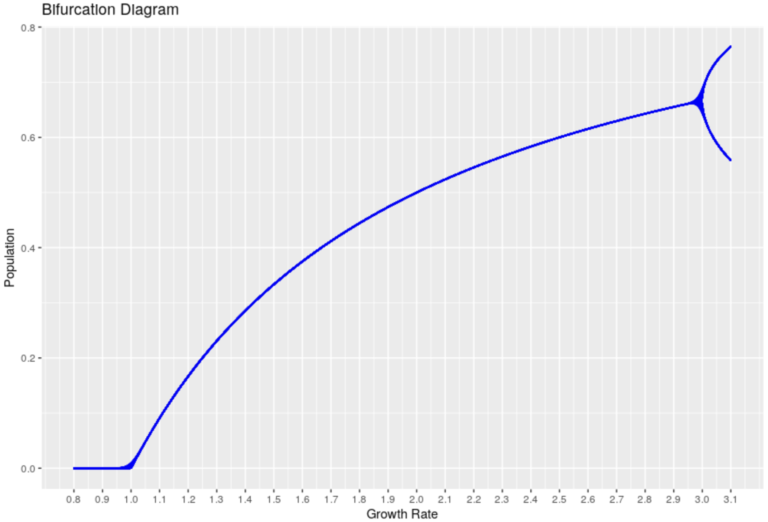
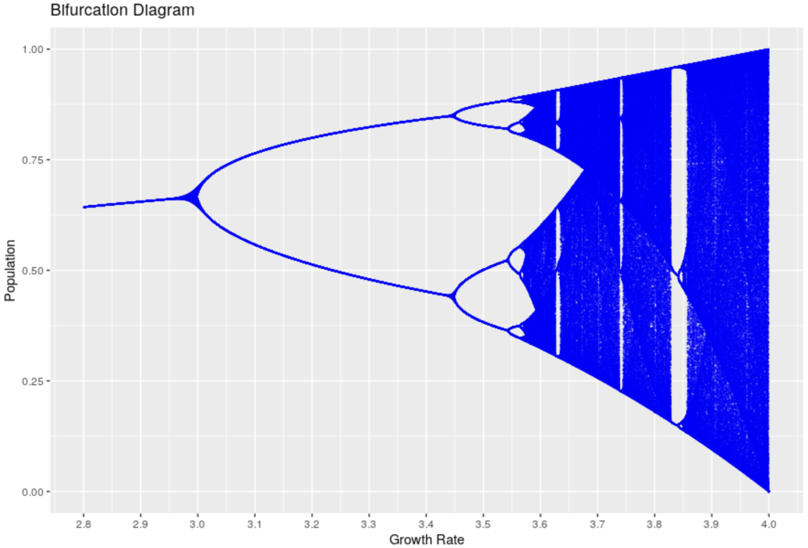
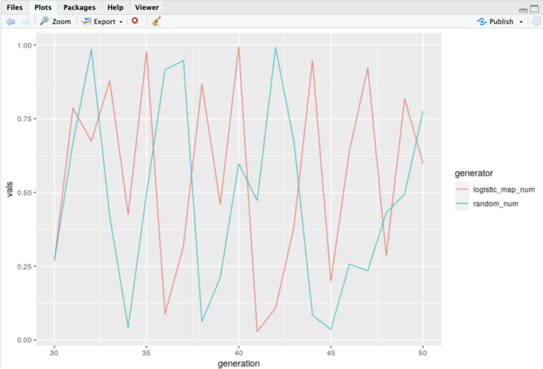
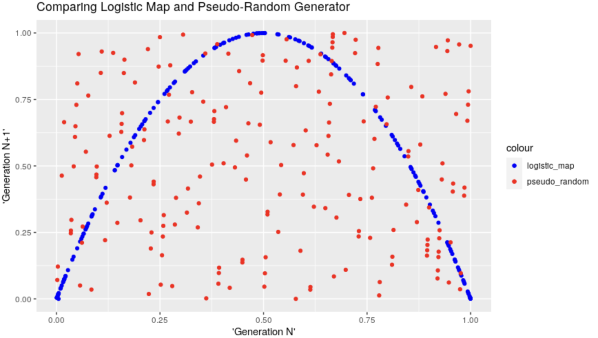

New Intro
It turns out, back in February 2022, I published on the “old” Blog an entry on the Logistic Map.
As I was reading through Chapter 2 last week, it was mentioned. This week, I browsed through Chapter 3 (that one will take time to fully follow), which discusses Bifurcations.
As the math was getting complicated, with “supercritical pitchfork” bifurcations, or “cusp catastrophe” including an imperfection parameter and hence play with 2 independent variables (forcing us to look at things as folded surfaces in 3D).
Long story short, it was a bit overwhelming, and so at one point I disconnected and thought I’d browse a bit through all the chapters to get a sense of what was ahead, which I did this morning.
And sure enough, chapter 10 is about one-dimensional maps and it comes after the introduction of chaos with the Lorenz equations.
Well, I’m not re-writing what I wrote some time ago, so instead I hereby reproduce the old entry, only updating pointers to images.
But I will say, the new book mentioned last week does put things in perspective, beyond “reproducing” the code and math, and that is quite exactly what I wanted in the first place.
The original Post, reproduced
Some Context
This was written while I was taking a course within the scope of my last MSc, which explains the reference to the course, next.
OLD Intro
So I took a course in “Numerical Methods”, and (somehow) passed (I loved every bit of it, although it was HARD!).
But then of course, taking a course doesn’t make me “proficient” at the subject matter. At best, it has exposed me to it and given me some confidence that I in fact can understand its concepts and solve problems – even if I’m not too fast… I simply feel there is SO MUCH MORE to it, and indeed I have several books on the subject to confirm it: I still have plenty to learn. Which is why I want to keep digging into it on my own.
If anything, I did get a good dose of Engineering-level Maths exposure, and I needed that (after a few years working in Cyber – and I guess in most jobs – one might tend to forget about matrices or how/why to differentiate equations, and many white-collar workers will simply spend their days using Outlook, PowerPoint and maybe Excel…).
Anyhow, I was thrilled I took that course. And I am looking forward for more similar courses (the Master continues, for me spread over three years…). But while that comes, I was particularly interested in some ideas of non-linear equations, differential equations, and Chaos Theory. We did do an exercise about Lorenz’s typical differential equations, and I saw the strange-attractors and the “butterfly-like” drawing come to life from my own implementation (in Matlab) of these 3 simple equations, and I kind of fell in love with it.
Let me be clear: I am not a mathematician, and I know I don’t fully grasp the ideas (far from it, in fact!). But I keep reading about it. While reading “Chaos” by James Gleick (a reference on the subject), I came across the chapter about Ecology and the “Logistic Map”. And I thought: This is BEAUTIFUL.

Last note for the Intro: The below has been done MANY TIMES, I am not inventing the wheel. I will just write my own R code to play around the simple equation and see its magic. I found references, particularly one that I will mention, that HEAVILY inspired this post (although I’m creating my own code – and doing it in R), on top of the book. Please do have a look at both if you have any interest.
The Logistic Map
So I’m not the right person to explain it in details, but the below is basically a mathematical expression of the evolution of a supposed population (say of fish), that considers a “growth rate” r, an initial population x0, and then tries to estimate the population say one year later (x1), and then the year after that (x2), etc. The following short equation – the “logistic map” – is all you need to produce the graph from the introduction!
\[ x_{k+1} = rx_k (1-x_k) \]
If you consider a limited environment, the typical example being a pond with fish, you need to consider that maybe a predator-prey thing might happen: If a population grows too much, it will deplete its resources (food, space…), and then will have to reduce its population so as to adapt to the available resources. This is the “* (1-x)” part of the equation: If there is too much fish, there won’t be enough food, space or oxygen. Hence the population would decrease. The decrease would leave more resources available, so that the fish population would be able to increase again (but in cycles, not continuously, as we can suppose the fish doesn’t reproduce and die instantaneously).
For the sake of the example, let’s assume an initial population x0 of 0.5. (Here x is set between 0 and 1, so that things work as expected).
Back to the graph of the introduction
So what is the graph in the intro all about?
It’s called a Bifurcation Diagram. It shows the evolution of the theoretical population over several generation (each dot is one value of the population at a given generation), as described above, but with different values for the growth ratio, after say 1000 generations.
On the x axis, different values of our growth ratio, and on the y axis, the number of individuals in the population. For a growth ratio below 1, as can be expected, the population tends to grow smaller and smaller and hence tends to decrease to 0. That’s the left part of the blue line, after 100 generations, the population is 0 in these cases.

What’s interesting is that for growth ratios between 1 and 3.0, the population tends to stabilize to one specific value, which is why we see how the line grows somewhat but appears as a line: For each growth ratio in that range, the population stabilizes to one value. (What you can’t really see is that, in fact, there are many dots on each position of the line, one for each generation: For a given growth ratio, the population is stable at that particular value).

From 3.0 to roughly 3.4, it turns out that the population oscillates between two values! That is: Either they have enough resources (population grows to a specific value) or not (the population decreases to another specific value), and each generation, it cycles to one of those two values.
After that it gets weirder:
Before a growth of ~3.45, more possible values appear, then again at ~3.54. But then the number of individuals in each generation seems to become “random”, and takes any value within some ranges, which is why we don’t see “lines” anymore, but rather clouds of points.
With a growth ratio of 3.999, it would seem each generation has a different number of individual, ranging basically from 0 to 1 (all possible values!), seemingly random!
Interlude
Randomness is important in cybersecurity. So having an equation THAT SIMPLE generating seemingly random numbers sounds appealing. It’s not much more complex than the “linear congruential generator“, in fact. Maybe we could compare those two?
So let’s implement a simplistic generator of random number:
# Linear congruential generator
random_numbers_vector <- c()
X0 <- 12 # seed
a <- 36
c <- 2
m <- 3583 # also, this one is prime
max_iterations <- 200
Xi_plus_1 <- function(x, current_iter = 0, max_iter = max_iterations) {
random_numbers_vector[current_iter+1] <<- x
if(current_iter == max_iter) return(x)
Xi_plus_1( (a * x + c) %% m, current_iter+1, max_iter)
}
random_numbers_vector <- rep(0, max_iterations)
Xi_plus_1(X0)
# scale to have values between 0 and 1
random_numbers_vector <- random_numbers_vector/max(random_numbers_vector)Then, for comparison, let’s generate our population values with a growth rate of 3.999, for the same amount of generations:
# Recursive version of our Logistic Map function
logistic_numbers_vector <- rep(0.5, max_iterations)
my_logistic_map3 <- function(my_r, x, current_iter = 0, max_iter = max_iterations) {
logistic_numbers_vector[current_iter+1] <<- x
if(current_iter == max_iter) return(x)
my_logistic_map3(my_r, my_r * x * (1-x), current_iter+1, max_iter)
}
my_logistic_map3(3.999, 0.5)Then let’s compare two consecutive values, from each set of generated numbers:
comparator_df <- data.frame(generation = 0:200,
logistic_map_num = logistic_numbers_vector,
random_num = random_numbers_vector)
comparator_df %>% pivot_longer(cols = contains("num"),
names_to = "generator",
values_to = "vals") -> for_plot
ggplot(for_plot[for_plot$generation %in% 30:50,], aes(x = generation, y = vals, colour = generator)) +
geom_line()And they seem rather “random” at first sight, both of them, wouldn’t you say?

Me at least, at first sight, I wouldn’t be able to tell which one is random, and which one isn’t (but is chaotic).
But HERE IS THE KEY: The logistic map is NOT at all random, but rather perfectly deterministic (well, to be fair, our pseudo-random number generator is deterministic too, but it behaves more as expected).
So how can we tell the difference? Here the “horse-shoe” figure makes its entrance. In the above graph, we could have thought that both generators gave back random numbers.
BUT if we graph the values from two consecutive generations against each other (apparently that’s called a Phase Diagram), the magic appears:
comparator_df$logistic_map_num1 <- c(comparator_df$logistic_map_num[2:nrow(comparator_df)],0)
comparator_df$random_num1 <- c(comparator_df$random_num[2:nrow(comparator_df)],0)
# Finally, the beauty!
ggplot(comparator_df) +
geom_point(aes(x = logistic_map_num, y = logistic_map_num1, colour = "logistic_map")) +
geom_point(aes(x = random_num, y = random_num1, colour = "pseudo_random")) +
scale_color_manual(values = c("logistic_map" = "blue", "pseudo_random" = "red"))+
ggtitle("Comparing Logistic Map and Pseudo-Random Generator")+
xlab("'Generation N'") +
ylab("'Generation N+1'")
And, to me, that’s absolutely & simply wonderful. I can’t avoid but to feel impressed by the structure appearing there, from something that anyone would otherwise have reasonably assumed is complete “chaos”… (And it is 😀 Structure in Chaos, I suppose that’s where this came from… Although I haven’t read enough yet :D)
The code
Of course, the above is done in R… I leave the demo code on my GitHub account for reference.
Let’s just say, it involves a few loops applying the very simple equation above, but with different growth rates, for a certain number of generations (at one point, we’re talking of about ~4 million points).
In the spirit of “Numerical Methods”, and taking advantage of our computer, we can repeat the calculations many times. In this case, the “apply()” family of functions were not too helpful, as the equation is recurrent, so we need one result before we can calculate the next (we could probably trick it, but that’s not the point for today).
Conclusion
I just loved this example: One of the simplest of equations (it doesn’t look that scary, does it), and yet so much can happen from one small change in one parameter!
To me, this is a thing of wonder. But then, maybe I am a bit of a geek for math after all (while not at all good at it).
There is of course MUCH MORE to it all. But I really wanted to implement this exercise for myself and reproduce it.
References
Someone did all the above (and better/more) in Python
The book (I don’t earn anything from the link, buy it where you like best)